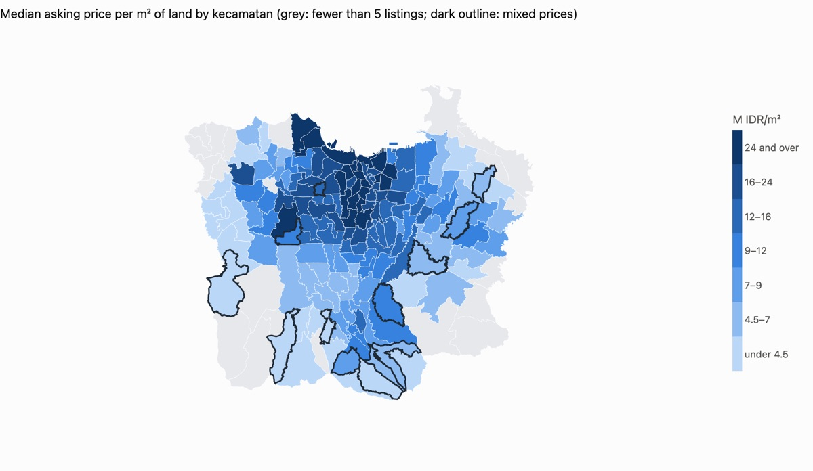

Jabodetabek House Price
A free map of asking price per m² of land across Jakarta, Bogor, Depok, Tangerang and Bekasi, plus a price estimate with a range. Weekly crawl and scoring, monthly refit behind a gate, and only aggregates are public.
- Ensemble of XGBoost, extra trees and ridge on 48 features; holdout median error 22.7% (95% CI 20.9–25.1), against 30.7% for an area-median baseline in the POC.
- Spatial-block cross-validation and BIG official boundaries.